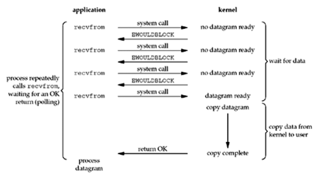
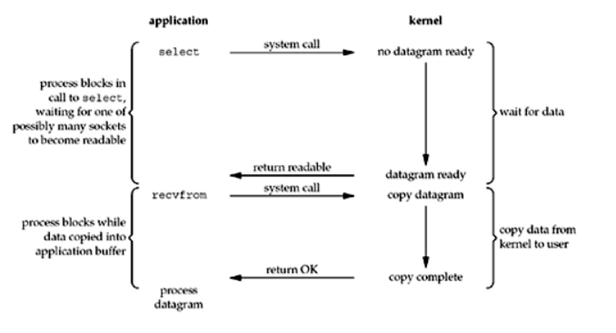

Introduction
本书主要介绍 Rust 中 async/await 语法和异步运行时的原理和工作机制，并不涉实际的异步代码编写。全书的内容主要分为以下几个章节：
-
异步编程：介绍 Rust 异步编程的基础概念，以及在 Rust 中应用的异步模型。
-
async/await：介绍Rust为支持异步编程而提供的语言层面的支持，包括
async/await语法和它们的工作原理。 -
IO 模型：介绍几种主要的 IO 模型，包括阻塞 IO、非阻塞 IO、IO 多路复用和异步 IO，其中 IO 多路复用是后文介绍
Epoll的基础。 -
Epoll：介绍
Epoll的工作原理并提供一个简单的Epollserver 的实现例子。Epoll是 Linux 中 IO 多路复用的一种实现，是后文介绍异步运行时的基础。 -
异步运行时：通过实现一个简单的异步运行时来介绍
Reactor、Waker、Executor、Task的基本概念。
References
- https://rust-lang.github.io/async-book/03_async_await/01_chapter.html
- https://www.zhihu.com/question/389262477/answer/1566255353
- https://doc.rust-lang.org/std/keyword.async.html
- https://doc.rust-lang.org/std/keyword.await.html
- https://doc.rust-lang.org/std/future/trait.Future.html
- https://cfsamson.github.io/books-futures-explained/1_futures_in_rust.html#futures-in-rust
- https://doc.rust-lang.org/std/task/struct.Context.html
- https://rust-lang.github.io/async-book/02_execution/02_future.html
- https://github.com/ZhangHanDong/inviting-rust
- https://doc.rust-lang.org/std/ops/trait.Generator.html
- https://doc.rust-lang.org/std/ops/enum.GeneratorState.html
- https://github.com/rust-lang/rust/blob/master/library/core/src/future/mod.rs
- https://ipotato.me/article/70
- https://cfsamson.github.io/books-futures-explained/4_generators_async_await.html
- https://rust-lang.github.io/async-book/01_getting_started/04_async_await_primer.html
- https://rust-lang.github.io/async-book/01_getting_started/02_why_async.html
- https://cfsamson.github.io/books-futures-explained/5_pin.html
- https://rust-lang.github.io/async-book/04_pinning/01_chapter.html
- https://folyd.com/blog/rust-pin-unpin/
- https://doc.rust-lang.org/std/pin/struct.Pin.html
- https://www.masterraghu.com/subjects/np/introduction/unix_network_programming_v1.3/ch06lev1sec2.html
- https://www.cnblogs.com/alex3714/articles/5876749.html
异步编程
为了避免歧义，本书中的异步编程特指在 Rust 中使用 async/await 关键字进行编写异步代码。
通过 async 关键字创建的异步函数或者异步块会返回一个实现了 Future trait 的类型，其本质上是一个协程对象。将 async/await 关键字和异步运行时结合使用就可以实现对多个协程对象的调度执行，从而达到并发执行的效果。
在 Rust 中主要应用的是 进程—线程—协程 异步模型，如下所示：
+------------------------------------------------------------------+
| |
| +--------------------------------------------------------+ |
| | | |
| | +-------------------------------------------------+ | |
| | | +------------+ +----------+ +--------------+ | | |
| | | | coroutine | | coroutine| | coroutine | | | |
| | + +------------+ +----------+ +--------------+ | | |
| | | | | |
| | +-------------------------------------------------+ | |
| | | |
| | thread | |
| +--------------------------------------------------------+ |
| |
| |
| +--------------------------------------------------------+ |
| | | |
| | +-------------------------------------------------+ | |
| | | +------------+ +----------+ +--------------+ | | |
| | | | coroutine | | coroutine| | coroutine | | | |
| | + +------------+ +----------+ +--------------+ | | |
| | | | | |
| | +-------------------------------------------------+ | |
| | | |
| | thread | |
| +--------------------------------------------------------+ |
| |
| process |
+------------------------------------------------------------------+
下层是进程，进程是持有资源的最小单位；中层是线程，线程不持有资源，是CPU调度的最小单位；上层是协程，协程既不持有资源、也不在意CPU的调度，它仅仅关注的是“协作式的、自然的流程切换”。
异步运行时就负责调度执行上述的协程对象。例如在一个协程在等待 IO 时，这个协程会主动出让自己的执行权给异步运行时，这时异步运行时可以调度运行其他的协程，从而最大化地利用CPU时间片。在 IO 密集型的应用中，异步编程将能够极大地提高执行效率。
async/await
在 fn、closure、block前使用 async 关键字，会将标记的代码转化为一个 Future。因此，async 标记的代码不会立即运行，只有在 Future 上调用 .await 时才会计算运行 Future。而在 await 一个 Future 时，会暂停当前函数的执行，直到 executor 完成对该 Future 的计算。
以上是对 async/await 语义的基本介绍。在本章中，我们将会更加深入地介绍 async/await 的使用和它们的底层原理。
async/await 的使用
async/await 是 Rust 中特殊的语法，它使得让出当前线程的控制权而不阻塞线程成为可能，从而允许在等待一个操作完成时可以运行其他代码。
有两种主要的方式使用 async：async fn 和 async {}。这两中使用方式都会返回一个实现了 Future trait 的值：
// `foo()` 返回一个实现了 `Future<Output = u8>` 的类型。
// `foo().await` 将会产生一个 u8 类型的值。
async fn foo() -> u8 { 5 }
fn bar() -> impl Future<Output = u8> {
// 这个 `async` 块会产生一个实现了 `Future<Output = u8>` 的类型。
async {
let x: u8 = foo().await;
x + 5
}
}
async fn 和 async {} 返回的 Future 是惰性的：在真正开始运行之前它什么也不会做。运行一个 Future 的最普遍的方式是 await 这个 Future： Future.await。
当 await 一个 Future 时，会暂停当前函数的运行，直到完成对 Future 的运行。如果这个 Future 被阻塞住了（例如等待网络IO），它会让出当前线程的控制权。当 Future 中的阻塞操作就绪时（例如等待的网络IO返回了响应），executor 会通过 poll 会恢复 Future 的运行。
async lifetime
与普通的函数不一样，async fn 会获取引用或其他非静态生命周期的参数，然后返回被这些参数的生命周期约束的 Future：
async fn foo(x: &u8) -> u8 { *x }
// 这与上面的函数完全等价
fn foo_expanded<'a>(x: &'a u8) -> impl Future<Output = u8> + 'a {
async move { *x }
}
这意味着，async fn 返回的 Future 必须在非静态生命周期参数仍然有效时 .await。在大多数情况下，我们在调用 async 函数后会立马 .await（例如 foo(&x).await），因此 async lifetime 不会对执行产生什么影响。但是，如果我们存储这种 Future 或者发送给其他的 task 或者 thread，就可能会造成问题。
把带有引用参数的 async fn 转化为静态 Future 的解决方法是：把参数和对 async fn 的调用封装到 async 块中：
fn bad() -> impl Future<Output = u8> {
let x = 5;
borrow_x(&x) // ERROR: `x` does not live long enough
}
fn good() -> impl Future<Output = u8> {
async {
let x = 5;
borrow_x(&x).await
}
}
通过把参数移动到 async 块中，我们把它的生命周期扩展到了匹配调用 good 返回的 Future 的生命周期。
async move
async 块和闭包允许像普通闭包那样使用 move 关键字。一个 async move 块会获取变量的所有权，但是这会导致无法与其他的代码共享这些变量：
// 不同的 async 块可以访问相同的变量s，只要它们都在s的作用域范围内执行
async fn blocks() {
let s = String::new("Hello World");
let future_one = async {
println!("{:?}", s);
}
let future_two = async {
println!("{:?}", s);
}
executor::join(future_one, future_two);
}
// s 被 move 进行 async 块中，因此只能在该 async 块内才能访问
fn move_block() -> impl Future<Output = ()> {
let s = String::new("Hello World");
async move {
println!("{:?}", s);
}
}
Future trait
在前文中，我们提到使用 async 标记的 fn、block、closure 都会返回一个 Future，本节将会详细地介绍 Future 的概念。
在标准库中，Future 的定义如下所示：
pub trait Future {
type Output; // Future计算完成时产生的值的类型
fn poll(self: Pin<&mut Self>, cx: &mut Context<'_>) -> Poll<Self::Output>;
}
Future 表示一个异步计算，或者说会在未来完成计算的操作。Future 的核心是 poll 方法，当调用 poll 方法时会尝试计算 Future 得到最终的值。如果值还没有准备好（例如等待某些事件发生），则此方法不会阻塞，而是会直接返回一个结果表示 Future 还没有计算完毕。
注意：
Future trait中涉及到的Pin将会在后面的章节中介绍。
poll
在上面对 Future 的介绍中，我们简要提到了 poll 方法，下面我们会对 poll 方法进行更详细的介绍。当调用 Future 的 poll 方法时会返回一个枚举类型的值：
Poll::Pending，表示这个Future还没计算完成Poll::Ready(val)，表示这个Future计算完毕，并附带计算结果：val
如果 Future 没有计算完成，例如想要等待一个 IO 事件发生，那么在 poll 方法体内，我们通常会调用传递给 poll 方法的 Context 的 waker 方法拿到一个 Waker（通常把 Waker 叫做唤醒器），然后注册这个 Waker 到一个“事件通知系统”中，最后返回 Pending 表示 Future 没有计算完成。
在未来某一时刻，Future 等待的 IO 事件就绪了，那么“事件通知系统”就会利用我们注册的 Waker 通过某种唤醒机制唤醒这个 Future，通过 poll 继续计算执行该 Future。
通过 Waker 唤醒器，我们可以只在 Future 想要等待的事件就绪时，才去唤醒 Future。这样我们就不需要通过一个死循环不断的调用 poll 方法来驱动 Future 的执行，这是异步编程之所以高效的关键所在。
小栗子
下面我们使用一个具体的例子来介绍 Future trait 的使用。
假设我们准备读取一个 socket，但是它可能还有准备好数据。如果数据准备好了，我们就可以读取它然后然后返回 Poll::Ready(data)，但是如果数据没有准备好，我们可以注册一个唤醒器到“事件通知系统”中：
struct SocketRead<'a> {
socket: &'a Socket
}
impl<'a> Future for SocketRead<'a> {
type Output = Vec<u8>;
fn poll(self: Pin<&mut Self>, cx: &mut Context<'_'>) -> Poll<Self::Output> {
let data = self.socket.no_block_read::<Option<Vec<u8>>>(1024);
match data {
Some(data) => Poll::Ready(data),
None => {
REACTOR.registe_waker_and_event(self.socket, Type::Read, cx.waker().clone());
Poll::Pending
}
}
}
}
代码中的 REACTOR 就是前文中所提到过的“事件通知系统”。当 socket 中有数据可读时，REACTOR 就会使用注册的 Waker 唤醒负责 SocketRead ，然后调用 poll 方法再次计算该 Future。
Leaf / Non-leaf Future
在前文中我们提到使用 async 关键字可以创建一个 Future 类型，而在上面的小栗子中我们通过实现 Future trait 的方式也创建了一个 Future 类型，那么这两个 Future 有什么区别呢？
Leaf Future
通过为我们的自定义类型实现 Future trait 的方式创建的 Future 被称为 Leaf Future。例如上面的小栗子中的 SocketRead 类型：
struct SocketRead<'a> {
socket: &'a Socket
}
impl<'a> Future for SocketRead<'a> {
/
}
Leaf Future 中通常会涉及到对 IO 的操作，例如从一个 socket 中读取数据，并且对 IO 的操作是非阻塞式的。
当调用异步运行时提供的异步读 socket 的方法时就会返回上述的 Future：
impl async_runtime {
fn read_socket(&self) -> SocketRead {
// ...
}
}
let mut leaf_future: SocketRead = async_runtime.read_socket();
通常情况下，这些 Leaf Future 都是由异步运行时自己创建的，用户只需要使用 async/await 关键字即可。
Non-leaf Future
Non-leaf Future 是我们使用 async 关键字创建 Future，并且会由 async runtime 来调度运行。
在 Non-leaf Future 中可以创建多个 Leaf Future， 并且通过 await Leaf Future 来完成对 IO 的操作：
let non_leaf_future = async {
let data = async_runtime.read_socket().await;
println!("Receive data: {:?}", data);
let data = async_runtime.read_socket().await;
println!("Receive data: {:?}", data);
let data = async_runtime.read_socket().await;
println!("Receive data: {:?}", data);
}
在 await 一个 Leaf Future 时，如果返回的是 Pending，那么Non-Leaf Future 就会让出对当前线程的控制权，此时 async runtime 就能够调度执行其他的 Non-Leaf Future 。当 Non-Leaf Future 中的 IO 操作就绪时，async runtime 就会重新激活挂起的 Future，在上次离开的地方继续运行。
Generator
Future 的底层依赖于生成器，因此在本节中我们将会介绍生成器的概念，以及生成器是如何转化为 Future 的。
Generator 定义
Generator 的定义位于标准库的 ops 模块中，具体如下所示：
pub trait Generator<R = ()> {
type Yield;
type Return;
fn resume(
self: Pin<&mut Self>,
arg: R
) -> GeneratorState<Self::Yield, Self::Return>;
}
pub enum GeneratorState<Y, R> {
Yielded(Y),
Complete(R),
}
Generator 通常也被称为协程，主要目的是为 async/await 语法提供构建块，但是未来也可能会扩展到为 Iterator 和其他类型提供符合人体工程学的定义。
Generator 的关联类型 Yield 对应于使用yield 表达式产出的值的类型。
Generator 的关联类型 Return 对应于使用 return 语句或者生成器中的最后一个表达式返回的值的类型。
注意：
Generator trait中涉及到的Pin将会在后面的章节中介绍。
resume
调用 Generator 的 resume 方法会恢复生成器的运行，如果还没有启动生成器的话则会启动生成器。
在执行生成器的过程中，如果遇到 yield 表达式，那么生成器就会在这个 yield 点挂起，并产出 yield 表达式的值：GeneratorState::Yielded(Y)。当再次调用 resume 方法时生成器就会在挂起的 yield 点恢复运行。
在运行过程中，如果遇到的是 return 语句或者生成器末尾的最后一个表达式，那么生成器执行完毕，并返回 GeneratorState::Complete(R)，R 就是 return 语句或者末尾表达式的值。
如果生成器已经执行完毕，返回了 GeneratorState::Complete，那么当再次调用 Generator 的 resume 方法时将会导致 panic。
Generator 使用
在闭包中使用 yield 关键字就可以创建一个生成器：
#![feature(generators, generator_trait)] use std::pin::Pin; use std::ops::{Generator, GeneratorState}; fn main() { let mut gen = || { let mut i = 1; while i < 10 { yield i; i += 1; } return (); }; loop { match Pin::new(&mut gen).resume(()) { GeneratorState::Yielded(y) => println!("Yielded: {}", y), GeneratorState::Complete(r) => { println!("Complete: {:?}", r); break; } } } }
通过为自定义类型实现 Generator trait 来创建生成器：
#![feature(generators, generator_trait)] use std::pin::Pin; use std::ops::{Generator, GeneratorState}; fn main() { let mut gen = MyGenerator { i: 1, completed: false }; loop { match Pin::new(&mut gen).resume(()) { GeneratorState::Yielded(y) => println!("Yielded: {}", y), GeneratorState::Complete(r) => { println!("Complete: {:?}", r); break; } } } } struct MyGenerator { i: i32, completed: bool } impl<R> Generator<R> for MyGenerator { type Yield = i32; type Return = (); fn resume(self: Pin<&mut Self>, _arg: R) -> GeneratorState<Self::Yield, Self::Return> { if self.completed { panic!("MyGenerator has been completed."); } let i = self.i; if i < 10 { self.get_mut().i = i + 1; GeneratorState::Yielded(i) } else { self.get_mut().completed = true; GeneratorState::Complete(()) } } }
把生成器当作迭代器使用：
#![feature(generators, generator_trait)] use std::pin::Pin; use std::iter::Iterator; use std::ops::{Generator, GeneratorState}; fn main() { let gen = MyGenerator { i: 1, completed: false }; for val in gen { println!("Got: {}", val); } } struct MyGenerator { i: i32, completed: bool } impl<R> Generator<R> for MyGenerator { type Yield = i32; type Return = (); fn resume(self: Pin<&mut Self>, _arg: R) -> GeneratorState<Self::Yield, Self::Return> { if self.completed { panic!("MyGenerator has been completed."); } let i = self.i; if i < 10 { self.get_mut().i = i + 1; GeneratorState::Yielded(i) } else { self.get_mut().completed = true; GeneratorState::Complete(()) } } } impl Iterator for MyGenerator { type Item = i32; fn next(&mut self) -> Option<Self::Item> { match Pin::new(self).resume(()) { GeneratorState::Yielded(y) => Some(y), GeneratorState::Complete(_) => None } } }
From Generator to Future
Rust 的 core 库中的 future 模块定义了将生成器转化为 Future 的函数（为了便于阅读去掉了注释部分）：
pub const fn from_generator<T>(gen: T) -> impl Future<Output = T::Return>
where T: Generator<ResumeTy, Yield = ()>
{
struct GenFuture<T: Generator<ResumeTy, Yield = ()>>(T);
impl<T: Generator<ResumeTy, Yield = ()>> !Unpin for GenFuture<T> {}
impl<T: Generator<ResumeTy, Yield = ()>> Future for GenFuture<T> {
type Output = T::Return;
fn poll(self: Pin<&mut Self>, cx: &mut Context<'_>) -> Poll<Self::Output> {
let gen = unsafe { Pin::map_unchecked_mut(self, |s| &mut s.0) };
match gen.resume(ResumeTy(NonNull::from(cx).cast::<Context<'static>>())) {
GeneratorState::Yielded(()) => Poll::Pending,
GeneratorState::Complete(x) => Poll::Ready(x),
}
}
}
GenFuture(gen)
}
从源码中可以看出，实际上我们使用 async 创建的 Future 是一个实现了 Future trait 的结构体 GenFuture，这个结构体的内部是一个生成器。
在我们调用 Future 的 poll 方法时，实际上就是在调用底层的生成器的 resume 方法，并且生成器返回的 GeneratorState::Yielded/Complete(val) 会被分别转化为 poll 的返回类型：Poll::Pending/Ready(val)。
小栗子
在本节的最后，我们通过一个小栗子把前面讲的 async/await、Future、Generator 的知识串联起来。
有如下的代码：
#![allow(unused)] fn main() { #[inline(never)] async fn foo() -> i32 { 10 } #[inline(never)] async fn bar() -> i32 { foo().await } }
HIR 是 Rust 代码编译的中间产物，可以帮助我们直到代码在脱糖后是什么样子。可以使用 Rust Playground 的 HIR 功能编译上述代码，结果如下：
#[inline(never)]
async fn foo()
->
/*impl Trait*/ #[lang = "from_generator"](move |mut _task_context|
{ { let _t = { 10 }; _t } })
#[inline(never)]
async fn bar()
->
/*impl Trait*/ #[lang = "from_generator"](move |mut _task_context|
{
{
let _t =
{
match #[lang = "into_future"](foo()) {
mut pinned =>
loop {
match unsafe {
#[lang = "poll"](#[lang = "new_unchecked"](&mut pinned),
#[lang = "get_context"](_task_context))
} {
#[lang = "Ready"] { 0: result } => break result,
#[lang = "Pending"] {} => { }
}
_task_context = (yield ());
},
}
};
_t
}
})
原生的 HIR 代码难以阅读，我们将其转化为下面的 Rust 伪代码：
#[inline(never)]
async fn foo() -> impl Future<Output = i32> {
from_generator(move |mut _task_context| {
let _t = 10;
_t
})
}
#[inline(never)]
async fn bar() -> impl Future<Output = i32> {
from_generator(move |mut _task_context| {
let _t = {
match into_future(foo()) {
mut pinned => {
loop {
match unsafe Pin::new_unchecked(&mut pinned).poll(get_context(_task_context)) {
Poll::Ready(result) => break result,
Poll::Pending => {}
}
_task_context = (yield ());
}
}
}
};
_t
})
}
可以看到 async 函数体内的代码被转化成了一个生成器，然后再调用 from_generator 函数传入生成器创建一个 Future ，这与我们上面介绍的 from_generator 函数的功能一致。
await 部分则被转化为了一个无限循环，在循环的内部会调用 await 的 Future 的 poll 方法，如果结果是 Poll::Ready，则终止循环并返回 result，继续执行剩余的代码；如果结果是 Poll::Pending，则会使用 yield 挂起生成器，将控制权转移给调用方。当调用方激活这个挂起的生成器时，生成器就会恢复运行，执行循环体中的代码。
因此，只有当 await 的 Future 执行完毕时，才会继续往下执行 async 块中的代码，这样就确保了能够以同步的方式编写异步代码，让我们能拥有良好的开发体验。
状态机
在上一节中，我们讲到生成器执行到 yield 表达式时，会在这个 yield 点挂起，当再次激活生成器时会在挂起的 yield 点恢复运行，那么生成器是怎么保存在 yield 点挂起时的状态呢？
事实上，编译器会把生成器转化为一个状态机，状态机中会保存每一个 yield 点的生成器的执行状态。
假如我们写了一个如下所示的生成器：
#![feature(generators, generator_trait)] use std::pin::Pin; use std::ops::{Generator, GeneratorState}; fn main() { let mut gen = || { yield 1; yield 2; () }; loop { match Pin::new(&mut gen).resume(()) { GeneratorState::Yielded(y) => println!("Yielded: {}", y), GeneratorState::Complete(c) => { println!("Complete: {:?}", c); break; } } } }
编译器会把生成器转化为下面的代码：
#![feature(generators, generator_trait)] use std::pin::Pin; use std::ops::{Generator, GeneratorState}; fn main() { let mut gen = Gen::new(); loop { match Pin::new(&mut gen).resume(()) { GeneratorState::Yielded(y) => println!("Yielded: {}", y), GeneratorState::Complete(c) => { println!("Complete: {:?}", c); break; } } } } enum Gen { Enter, State1(State1), State2(State2), Exit } struct State1 { _x: i32 } struct State2 { _x: i32 } impl<R> Generator<R> for Gen { type Yield = i32; type Return = (); fn resume(self: Pin<&mut Self>, _arg: R) -> GeneratorState<Self::Yield, Self::Return> { let mut_gen = self.get_mut(); match std::mem::replace(mut_gen, Gen::Exit) { Gen::Enter => { *mut_gen = Gen::State1(State1 { _x: 1 }); GeneratorState::Yielded(1) } Gen::State1(_) => { *mut_gen = Gen::State2(State2 { _x: 2 }); GeneratorState::Yielded(2) } Gen::State2(_) => { *mut_gen = Gen::Exit; GeneratorState::Complete(()) } Gen::Exit => panic!("Generator has been completed.") } } } impl Gen { fn new() -> Self { Self::Enter } }
同时，由于每个 async 函数最终都会生成一个状态机，并且每个可执行文件都会捆绑一个异步运行时，这会导致异步的 Rust 代码在编译后产生更大的二进制体积，这也是 async Rust 的一个小缺点。
小知识：基于状态机实现的协程，也被称为无栈协程，这与有栈协程相对应。
Pin
前文的 Future trait、Geneartor 和状态机中都出现了 Pin，那么 Pin 到底有什么用呢？ 在本节中，我们将会详细地介绍它。
自引用结构
在 Safe Rust 中，我们无法创建自引用结构体：
fn main() { let s = "Hello World".to_string(); let _ = SelfReference { a: s, b: &s }; } struct SelfReference<'a> { a: String, b: &'a String }
如果编译，将会发生报错：
error[E0382]: borrow of moved value: `s`
--> src/main.rs:5:12
|
2 | let s = "Hello World".to_string();
| - move occurs because `s` has type `String`, which does not implement the `Copy` trait
3 | let _ = SelfReference {
4 | a: s,
| - value moved here
5 | b: &s
| ^^ value borrowed here after move
这是因为 s 已经发生了 move，因此 b 就不能借用已经 move 了的 s。
为了创建自引用结构，我们需要使用裸指针：
fn main() { let mut sr_1 = SelfReference::new("Hello"); sr_1.init(); let mut sr_2 = SelfReference::new("World"); sr_2.init(); println!("sr_1: {{ a: {}, b: {} }}", sr_1.get_a(), sr_1.get_b()); println!("sr_2: {{ a: {}, b: {} }}", sr_2.get_a(), sr_2.get_b()); } #[derive(Debug)] struct SelfReference { a: String, b: *const String } impl SelfReference { fn new(msg: &str) -> Self { Self { a: msg.to_string(), b: std::ptr::null() } } fn init(&mut self) { let ptr_to_a = &self.a as *const _; self.b = ptr_to_a; } fn get_a(&self) -> &str { &self.a } fn get_b(&self) -> &str { unsafe { &*self.b } } }
编译运行，结果如下所示：
sr_1: { a: Hello, b: Hello }
sr_2: { a: World, b: World }
接下来，让我们交换 sr_1 和 sr_2 的内存位置的数据，即 sr_1 和 sr_2 互相 move 给对方：
fn main() { let mut sr_1 = SelfReference::new("Hello"); sr_1.init(); let mut sr_2 = SelfReference::new("World"); sr_2.init(); println!("Before swap:"); println!("sr_1: {{ a: {}, b: {} }}", sr_1.get_a(), sr_1.get_b()); println!("sr_2: {{ a: {}, b: {} }}", sr_2.get_a(), sr_2.get_b()); std::mem::swap(&mut sr_1, &mut sr_2); println!("\nAfter swap:"); println!("sr_1: {{ a: {}, b: {} }}", sr_1.get_a(), sr_1.get_b()); println!("sr_2: {{ a: {}, b: {} }}", sr_2.get_a(), sr_2.get_b()); } #[derive(Debug)] struct SelfReference { a: String, b: *const String } impl SelfReference { fn new(msg: &str) -> Self { Self { a: msg.to_string(), b: std::ptr::null() } } fn init(&mut self) { let ptr_to_a = &self.a as *const _; self.b = ptr_to_a; } fn get_a(&self) -> &str { &self.a } fn get_b(&self) -> &str { unsafe { &*self.b } } }
编译运行，结果如下所示：
Before swap:
sr_1: { a: Hello, b: Hello }
sr_2: { a: World, b: World }
After swap:
sr_1: { a: World, b: Hello }
sr_2: { a: Hello, b: World }
可以看出，在交换 sr_1 和 sr_2 后，字段 a 的数据也发生了交换，但是字段 b 的数据没有改变，仍然指向之前的位置，如图所示：

这意味着，sr（sr_1、sr_2）将不再是自引用结构体，并保存了一个指向其他对象的裸指针。因此，sr 的字段 b 的生命周期将不再和其结构体本身相关联，我们将难以保证 sr.b 指针不会变成悬垂指针。
在上面的例子中，由于使用 swap 函数导致出现了我们不想要的结果，在后续的代码中对 sr 的使用很可能会出现段错误、UB 等其他类型的错误。
Let's pin it!
Rust 是一门极为注重内存安全的语言，为了能够安全地使用自引用结构，Rust 发明了 Pin。
Pin
Pin 位于 std 库的 pin 模块中，源代码定义如下所示：
#[stable(feature = "pin", since = "1.33.0")]
#[lang = "pin"]
#[fundamental]
#[repr(transparent)]
#[derive(Copy, Clone)]
pub struct Pin<P> {
pointer: P,
}
#[stable(feature = "pin", since = "1.33.0")]
impl<P: Deref> Deref for Pin<P> {
type Target = P::Target;
fn deref(&self) -> &P::Target {
Pin::get_ref(Pin::as_ref(self))
}
}
#[stable(feature = "pin", since = "1.33.0")]
impl<P: DerefMut<Target: Unpin>> DerefMut for Pin<P> {
fn deref_mut(&mut self) -> &mut P::Target {
Pin::get_mut(Pin::as_mut(self))
}
}
Pin 实现了 Deref 和 DerefMut trait，因此 Pin 是一个智能指针。并且 Pin 的内部包裹了另一个指针 P，因此我们一般使用 Pin<P<T>> 的方式来表示一个 Pin 结构（T 是指针 P 指向的类型）。
既然有 Pin，那么自然就有 Unpin，那么 Unpin 是什么呢？Unpin 是一个 auto trait，编译器会默认为所有的类型实现 Unpin，除非这些类型实现了 !Unpin。
要想获取 Pin<P<T>> 中 T 的可变引用 &mut T，可以使用 Pin 提供的 get_mut 方法，这也是 Pin 提供的 api 中唯一可以安全地获取 &mut T 的方法，其函数签名如下所示：
pub fn get_mut(self) -> &'a mut T
where
T: Unpin,
发现了吗？要想安全地拿到 &mut T，T 就必须实现 Unpin。如果 T 实现了 !Unpin，那么就不可能安全地拿到 T 的可变引用，我们自然也就无法使用 std::mem::swap(x: &mut T, y: &mut T) 等类似的函数 move T，就不会发生前文的例子中出现的未定义行为。
因此，Pin<P<T>> 利用 Rust 的类型系统保证：如果 T 实现了 !Unpin，那么就不可能在 Safe Rust 中获取 T 的可变引用。相反，如果 T 实现了 Unpin，那么 Pin 就仅仅是对 P<T> 的一层包装，我么可以随意地拿到 &mut T。
接下来，我们将会使用 Pin 解决上面的那个例子中出现的问题。
Pin to stack
Pin 到栈上是指 Pin 的那个指针在栈上面，使用 Pin::new_unchecked 函数即可把指针 Pin 到栈上去：
#![feature(negative_impls)] use std::pin::Pin; fn main() { let mut sr_1 = SelfReference::new("Hello"); let mut sr_1 = unsafe { Pin::new_unchecked(&mut sr_1) }; sr_1.as_mut().init(); let mut sr_2 = SelfReference::new("World"); let mut sr_2 = unsafe { Pin::new_unchecked(&mut sr_2) }; sr_2.as_mut().init(); println!("Before swap:"); println!("sr_1: {{ a: {}, b: {} }}", sr_1.as_ref().get_a(), sr_1.as_ref().get_b()); println!("sr_2: {{ a: {}, b: {} }}", sr_2.as_ref().get_a(), sr_2.as_ref().get_b()); println!("If we want to swap:"); std::mem::swap(sr_1.get_mut(), sr_2.get_mut()); } #[derive(Debug)] struct SelfReference { a: String, b: *const String } impl !Unpin for SelfReference {} impl SelfReference { fn new(msg: &str) -> Self { Self { a: msg.to_string(), b: std::ptr::null() } } fn init(self: Pin<&mut Self>) { let ptr_to_a = &self.a as *const _; unsafe { self.get_unchecked_mut().b = ptr_to_a; } } fn get_a(self: Pin<&Self>) -> &str { &self.get_ref().a } fn get_b(self: Pin<&Self>) -> &str { unsafe { &*self.b } } }
此时代码将不会通过编译：
error[E0277]: `SelfReference` cannot be unpinned
--> src/main.rs:18:25
|
18 | std::mem::swap(sr_1.get_mut(), sr_2.get_mut());
| ^^^^^^^ the trait `Unpin` is not implemented for `SelfReference`
|
= note: consider using `Box::pin`
note: required by a bound in `Pin::<&'a mut T>::get_mut`
error[E0277]: `SelfReference` cannot be unpinned
--> src/main.rs:18:41
|
18 | std::mem::swap(sr_1.get_mut(), sr_2.get_mut());
| ^^^^^^^ the trait `Unpin` is not implemented for `SelfReference`
|
= note: consider using `Box::pin`
note: required by a bound in `Pin::<&'a mut T>::get_mut`
这说明当我们把 &mut SelfReference Pin 到栈上之后，无法通过 get_mut 方法拿到 &mut SelfReference，那么自然就无法使用 swap 函数，在编译阶段就保证了不会出现内存安全问题。
Pin::new_unchecked 是一个 unsafe 函数，这是因为需要使用者自己遵守约定只使用 Pin 提供的 api 来获取并使用可变引用。
假如使用者提前 drop 掉 Pin，这样就可以直接获取 T 的可变引用，仍然会导致内存安全问题：
#![feature(negative_impls)] use std::pin::Pin; fn main() { let mut sr_1 = SelfReference::new("Hello"); let mut sr_1_pin = unsafe { Pin::new_unchecked(&mut sr_1) }; sr_1_pin.as_mut().init(); let mut sr_2 = SelfReference::new("World"); let mut sr_2_pin = unsafe { Pin::new_unchecked(&mut sr_2) }; sr_2_pin.as_mut().init(); println!("Before swap:"); println!("sr_1: {{ a: {}, b: {} }}", sr_1_pin.as_ref().get_a(), sr_1_pin.as_ref().get_b()); println!("sr_2: {{ a: {}, b: {} }}", sr_2_pin.as_ref().get_a(), sr_2_pin.as_ref().get_b()); drop(sr_1_pin); drop(sr_2_pin); println!("\nAfter swap:"); std::mem::swap(&mut sr_1, &mut sr_2); let sr_1_pin = unsafe { Pin::new_unchecked(&mut sr_1) }; let sr_2_pin = unsafe { Pin::new_unchecked(&mut sr_2) }; println!("sr_1: {{ a: {}, b: {} }}", sr_1_pin.as_ref().get_a(), sr_1_pin.as_ref().get_b()); println!("sr_2: {{ a: {}, b: {} }}", sr_2_pin.as_ref().get_a(), sr_2_pin.as_ref().get_b()); } #[derive(Debug)] struct SelfReference { a: String, b: *const String } impl !Unpin for SelfReference {} impl SelfReference { fn new(msg: &str) -> Self { Self { a: msg.to_string(), b: std::ptr::null() } } fn init(self: Pin<&mut Self>) { let ptr_to_a = &self.a as *const _; unsafe { self.get_unchecked_mut().b = ptr_to_a; } } fn get_a(self: Pin<&Self>) -> &str { &self.get_ref().a } fn get_b(self: Pin<&Self>) -> &str { unsafe { &*self.b } } }
编译运行，将会出现和之前的例子中一样的问题：
Before swap:
sr_1: { a: Hello, b: Hello }
sr_2: { a: World, b: World }
After swap:
sr_1: { a: World, b: Hello }
sr_2: { a: Hello, b: World }
Pin to heap
Pin 到堆上是指 Pin 的那个指针在堆上面，使用Box::pin 函数即可把指针 Pin 到堆上去：
#![feature(negative_impls)] use std::pin::Pin; fn main() { let mut sr_1 = SelfReference::new("Hello"); let mut sr_2 = SelfReference::new("World"); println!("Before swap:"); println!("sr_1: {{ a: {}, b: {} }}", sr_1.as_ref().get_a(), sr_1.as_ref().get_b()); println!("sr_2: {{ a: {}, b: {} }}", sr_2.as_ref().get_a(), sr_2.as_ref().get_b()); println!("If we want to swap:"); std::mem::swap(sr_1.as_mut().get_mut(), sr_2.as_mut().get_mut()); } #[derive(Debug)] struct SelfReference { a: String, b: *const String } impl !Unpin for SelfReference {} impl SelfReference { fn new(msg: &str) -> Pin<Box<Self>> { let sr = Self { a: msg.to_string(), b: std::ptr::null() }; let mut boxed = Box::pin(sr); let ptr_to_a = &boxed.a as *const _; unsafe { boxed.as_mut().get_unchecked_mut().b = ptr_to_a; } boxed } fn get_a(self: Pin<&Self>) -> &str { &self.get_ref().a } fn get_b(self: Pin<&Self>) -> &str { unsafe { &*self.b } } }
此时代码将不会通过编译：
error[E0277]: `SelfReference` cannot be unpinned
--> src/main.rs:13:34
|
13 | std::mem::swap(sr_1.as_mut().get_mut(), sr_2.as_mut().get_mut());
| ^^^^^^^ the trait `Unpin` is not implemented for `SelfReference`
|
= note: consider using `Box::pin`
note: required by a bound in `Pin::<&'a mut T>::get_mut`
error[E0277]: `SelfReference` cannot be unpinned
--> src/main.rs:13:59
|
13 | std::mem::swap(sr_1.as_mut().get_mut(), sr_2.as_mut().get_mut());
| ^^^^^^^ the trait `Unpin` is not implemented for `SelfReference`
|
= note: consider using `Box::pin`
note: required by a bound in `Pin::<&'a mut T>::get_mut`
Pin 到堆上的优点是不需要使用者编写 unsafe 函数来构造 Pin，也不需要使用者自己遵守约定只使用 Pin 提供的 api 来获取可变引用，因为 Pin 到堆上后，用户只能使用 Pin<Box<T>>；缺点是 Pin 到堆上会有额外的性能开销。
Pin and async
在前文中我们给出了 Future 和 Generator 的定义：
pub trait Future {
type Output;
fn poll(self: Pin<&mut Self>, cx: &mut Context<'_>) -> Poll<Self::Output>;
}
pub trait Generator<R = ()> {
type Yield;
type Return;
fn resume(
self: Pin<&mut Self>,
arg: R
) -> GeneratorState<Self::Yield, Self::Return>;
}
还有将 Generator 转化为 Future 的函数：
pub const fn from_generator<T>(gen: T) -> impl Future<Output = T::Return>
where T: Generator<ResumeTy, Yield = ()>
{
struct GenFuture<T: Generator<ResumeTy, Yield = ()>>(T);
impl<T: Generator<ResumeTy, Yield = ()>> !Unpin for GenFuture<T> {}
impl<T: Generator<ResumeTy, Yield = ()>> Future for GenFuture<T> {
type Output = T::Return;
fn poll(self: Pin<&mut Self>, cx: &mut Context<'_>) -> Poll<Self::Output> {
let gen = unsafe { Pin::map_unchecked_mut(self, |s| &mut s.0) };
match gen.resume(ResumeTy(NonNull::from(cx).cast::<Context<'static>>())) {
GeneratorState::Yielded(()) => Poll::Pending,
GeneratorState::Complete(x) => Poll::Ready(x),
}
}
}
GenFuture(gen)
}
可以看到要调用 Future 的 Poll 方法和 Generator 的 resume 方法必须使用 Pin<&mut Self> 才行。并且在 from_generator 函数中为 GenFuture 实现了 !Unpin。
经过前面的学习，我们知道为 T 实现了 !Unpin 后，就无法在 Safe Rust 中获取 T 的可变引用，而 Rust 会主动为 Future 实现 !Unpin，那么为什么 Rust 需要 Pin 住 Future 呢？
假设我们编写了一个生成器：
#![feature(generators, generator_trait)] fn main(){ let _gen = || { let s = "Hello World".to_string(); let borrowed_s = &s; yield borrowed_s.len(); println!("{}", borrowed_s); }; }
编译后将会发生报错：
error[E0626]: borrow may still be in use when generator yields
--> src/main.rs:6:26
|
6 | let borrowed_s = &s;
| ^^
7 |
8 | yield borrowed_s.len();
| ---------------------- possible yield occurs here
编译器提示我们生成器中存在跨 yield 借用，那么为什么编译器不允许跨 yield 借用呢？
想要知道原因，我们还要继续深入底层，上述的生成器会被编译成一个状态机：
#![feature(generators, generator_trait)] use std::pin::Pin; use std::ops::{Generator, GeneratorState}; fn main() { let mut gen = Gen::new(); loop { match Pin::new(&mut gen).resume(()) { GeneratorState::Yielded(y) => println!("Yielded: {}", y), GeneratorState::Complete(c) => { println!("Complete: {:?}", c); break; } } } } enum Gen { Enter, Yielded{ s: String, borrowed_s: *const String }, Exit } impl<R> Generator<R> for Gen { type Yield = usize; type Return = (); fn resume(self: Pin<&mut Self>, _arg: R) -> GeneratorState<Self::Yield, Self::Return> { let mut_gen = self.get_mut(); match mut_gen { Gen::Enter => { let s = "Hello World".to_string(); let borrowed_s = &s; let len = borrowed_s.len(); *mut_gen = Gen::Yielded { s, borrowed_s: std::ptr::null() }; if let Gen::Yielded { s, borrowed_s } = mut_gen { *borrowed_s = s as *const _; } GeneratorState::Yielded(len) } Gen::Yielded{ borrowed_s, .. } => { let borrowed_s: &String = unsafe { &**borrowed_s }; println!("{}", borrowed_s); *mut_gen = Gen::Exit; GeneratorState::Complete(()) } Gen::Exit => panic!("Generator has been completed.") } } } impl Gen { fn new() -> Self { Self::Enter } }
编译上述代码，结果似乎就是我们所期待的：
Yielded: 11
Hello World
Complete: ()
从上述的代码中可以看出，生成的状态机中存在自引用结构。因此如果生成器中存在跨 yield 点借用，那么就可能产生内存安全问题，编译器干脆就禁止存在跨 yield 点借用的生成器通过编译。
例如，如果我们使用 swap 函数 move 生成器就可能发生异常：
#![feature(generators, generator_trait)] use std::pin::Pin; use std::ops::{Generator, GeneratorState}; fn main() { let mut gen_1 = Gen::new(); let mut gen_2 = Gen::new(); match Pin::new(&mut gen_1).resume(()) { GeneratorState::Yielded(y) => println!("Yielded: {}", y), GeneratorState::Complete(c) => println!("Complete: {:?}", c) } match Pin::new(&mut gen_2).resume(()) { GeneratorState::Yielded(y) => println!("Yielded: {}", y), GeneratorState::Complete(c) => println!("Complete: {:?}", c) } std::mem::swap(&mut gen_1, &mut gen_2); match Pin::new(&mut gen_1).resume(()) { GeneratorState::Yielded(y) => println!("Yielded: {}", y), GeneratorState::Complete(c) => println!("Complete: {:?}", c) } match Pin::new(&mut gen_2).resume(()) { GeneratorState::Yielded(y) => println!("Yielded: {}", y), GeneratorState::Complete(c) => println!("Complete: {:?}", c) } } enum Gen { Enter, Yielded{ s: String, borrowed_s: *const String }, Exit } impl<R> Generator<R> for Gen { type Yield = usize; type Return = (); fn resume(self: Pin<&mut Self>, _arg: R) -> GeneratorState<Self::Yield, Self::Return> { let mut_gen = self.get_mut(); match mut_gen { Gen::Enter => { let s = "Hello World".to_string(); let borrowed_s = &s; let len = borrowed_s.len(); *mut_gen = Gen::Yielded { s, borrowed_s: std::ptr::null() }; if let Gen::Yielded { s, borrowed_s } = mut_gen { *borrowed_s = s as *const _; } GeneratorState::Yielded(len) } Gen::Yielded{ borrowed_s, .. } => { let borrowed_s: &String = unsafe { &**borrowed_s }; println!("{}", borrowed_s); *mut_gen = Gen::Exit; GeneratorState::Complete(()) } Gen::Exit => panic!("Generator has been completed.") } } } impl Gen { fn new() -> Self { Self::Enter } }
编译运行将会发生段错误：
/playground/tools/entrypoint.sh: line 11: 12 Segmentation fault
Yielded: 11
Yielded: 11
Hello World
Complete: ()
为了防止 move 掉生成器，我们需要为 Gen 实现 !Unpin：
#![feature(negative_impls)] #![feature(generators, generator_trait)] use std::pin::Pin; use std::ops::{Generator, GeneratorState}; fn main() { let mut gen_1 = Gen::new(); let mut gen_2 = Gen::new(); let mut boxed_pin_1 = Box::pin(gen_1); let mut boxed_pin_2 = Box::pin(gen_2); match boxed_pin_1.as_mut().resume(()) { GeneratorState::Yielded(y) => println!("Yielded: {}", y), GeneratorState::Complete(c) => println!("Complete: {:?}", c) } match boxed_pin_2.as_mut().resume(()) { GeneratorState::Yielded(y) => println!("Yielded: {}", y), GeneratorState::Complete(c) => println!("Complete: {:?}", c) } std::mem::swap(boxed_pin_1.as_mut().get_mut(), boxed_pin_2.as_mut().get_mut()); } enum Gen { Enter, Yielded{ s: String, borrowed_s: *const String }, Exit } impl !Unpin for Gen {} impl<R> Generator<R> for Gen { type Yield = usize; type Return = (); fn resume(self: Pin<&mut Self>, _arg: R) -> GeneratorState<Self::Yield, Self::Return> { let mut_gen = unsafe { self.get_unchecked_mut() }; match mut_gen { Gen::Enter => { let s = "Hello World".to_string(); let borrowed_s = &s; let len = borrowed_s.len(); *mut_gen = Gen::Yielded { s, borrowed_s: std::ptr::null() }; if let Gen::Yielded { s, borrowed_s } = mut_gen { *borrowed_s = s as *const _; } GeneratorState::Yielded(len) } Gen::Yielded{ borrowed_s, .. } => { let borrowed_s: &String = unsafe { &**borrowed_s }; println!("{}", borrowed_s); *mut_gen = Gen::Exit; GeneratorState::Complete(()) } Gen::Exit => panic!("Generator has been completed.") } } } impl Gen { fn new() -> Self { Self::Enter } }
编译修改后的代码将会直接报错：
error[E0277]: `Gen` cannot be unpinned
--> src/main.rs:23:41
|
23 | std::mem::swap(boxed_pin_1.as_mut().get_mut(), boxed_pin_2.as_mut().get_mut());
| ^^^^^^^ the trait `Unpin` is not implemented for `Gen`
|
= note: consider using `Box::pin`
note: required by a bound in `Pin::<&'a mut T>::get_mut`
error[E0277]: `Gen` cannot be unpinned
--> src/main.rs:23:73
|
23 | std::mem::swap(boxed_pin_1.as_mut().get_mut(), boxed_pin_2.as_mut().get_mut());
| ^^^^^^^ the trait `Unpin` is not implemented for `Gen`
|
= note: consider using `Box::pin`
note: required by a bound in `Pin::<&'a mut T>::get_mut`
通过为生成器实现 !Unpin，我们有效的防止了可能会出现的内存安全问题。
但是，我们无法为使用闭包编写的生成器实现 !Unpin，那么怎么让我们的初版代码编译通过呢？答案是使用 static 关键字标记生成器，这就相当于为我们的生成器实现了 !Unpin：
#![feature(generators, generator_trait)] use std::ops::{Generator, GeneratorState}; fn main(){ let gen = static || { let s = "Hello World".to_string(); let borrowed_s = &s; yield borrowed_s.len(); println!("{}", borrowed_s); }; let mut boxed_pin_gen = Box::pin(gen); loop { match boxed_pin_gen.as_mut().resume(()) { GeneratorState::Yielded(y) => println!("Yielded: {}", y), GeneratorState::Complete(c) => { println!("Complete: {:?}", c); break; } } } }
编译运行，一切正常：
Yielded: 11
Hello World
Complete: ()
小总结
async 创建的 Future 在编译后会生成一个状态机，如果 async 代码中存在跨 await 借用，那么对应的底层生成器中也会存在跨 yield 点借用，最终生成的状态机中就会存在自引用结构，为了避免可能发生的内存安全问题，Rust 自动为 Future 实现了 !Unpin，并且只能使用 Pin<&mut Self> 来调用 Future 的 poll 方法和 Generator 的 resume 方法，从而避免了使用者在 Safe Rust 中获取 Future 或 Generator 的可变引用，最终避免了使用者使用 swap 之类的函数 move 掉 Future 或 Generator 而造成的内存安全问题。
Pin 总结
官方的 Async Book 上给出了关于 Pin 的黄金八条：
-
如果
T: Unpin（默认会实现），那么Pin<'a, T>完全等价于&'a mut T。换言之：Unpin意味着这个类型被移走也没关系，就算已经被固定了，所以Pin对这样的类型毫无影响。 -
如果
T: !Unpin， 获取已经被固定的T类型示例的&mut T需要unsafe。 -
标准库中的大部分类型实现
Unpin，在 Rust 中遇到的多数普通类型也是一样。但是，async/await生成的Future是个例外。 -
你可以在
nightly通过特性标记来给类型添加!Unpin约束，或者在stable给你的类型加std::marker::PhatomPinned字段。 -
你可以将数据固定到栈上或堆上。
-
固定
!Unpin对象到栈上需要unsafe -
固定
!Unpin对象到堆上不需要unsafe，Box::pin可以快速完成这种固定。 -
对于
T: !Unpin的被固定数据，你必须维护好数据内存不会无效的约定，或者叫固定时起直到释放。这是Pin约定中的重要部分。
IO 模型
在介绍 Future trait 的那一章中我们提到：如果一个 Future 没有计算完成，例如想要等待一个 IO 事件发生，那么通常会注册 waker 到一个“事件通知系统”中，当这个 IO 事件就绪时，“事件通知系统”就会通过 waker 唤醒之前的 Future 继续执行。
那么“事件通知系统”要怎么知道 Future 想要等待的 IO 事件什么时候就绪呢？这与 IO 模型有关，因此在本章中我们将会介绍几种不同的 IO 模型以及它们的特点。
对于一次 IO 访问（例如 read 操作），通常有两个不同的阶段：
- 等待数据准备 (Waiting for the data to be ready)
- 将数据从内核拷贝到进程中 (Copying the data from the kernel to the process)
例如在一个 socket 上读取数据，首先需要等待数据到达网络，当数据到达时将数据拷贝到内核缓冲区中，再将数据从内核缓冲区中拷贝到用户进程的缓冲区中。
正是由于 IO 访问经历的两个阶段，Linux 系统产生了下面五种 IO 模型：
- 阻塞 IO（blocking IO）
- 非阻塞 IO（nonblocking IO）
- IO 多路复用（IO multiplexing）
- 信号驱动 IO（signal driven IO）
- 异步 IO（asynchronous IO）
信号驱动 IO 在实际中用的不多，因此本章中不会介绍信号驱动 IO，感兴趣的话可以阅读 Unix Network Programming 中关于关于信号驱动 IO 的部分。
阻塞 IO
在 Linux 中，阻塞 IO 是最流行的 IO 模型，默认情况下所有的 socket 都是阻塞的（blocking）。对于阻塞 IO 来说，读操作的流程如下所示：

当用户进程发起 recvfrom 系统调用后，内核开始 IO 的第一个阶段：等待数据准备好，把数据从硬件拷贝到内核缓冲区（对于网络 IO，要先等待数据报文到达）。当数据准备好后，开始 IO 的第二个阶段：把数据从内核缓冲区拷贝到用户进程的缓冲区。当两个 IO 阶段都完成后，recvfrom 系统调用返回，也就是说用户进程从发起 recvfrom 系统调用直到返回都是处于阻塞状态。
因此，对于阻塞 IO 来说，用户进程在 IO 的两个阶段都被 recvfrom 系统调用阻塞了。
非阻塞 IO
在 Linux 中，我们可以把一个 socket 设置为非阻塞（nonblocking）。对于非阻塞 IO 来说，读操作的流程如下所示：

当用户进程发起 recvfrom 系统调用后，如果数据没有准备好，recvfrom 系统调用会立即返回 EWOULDBLOCK 错误。用户进程可以通过一个死循环不断发起 recvfrom 系统调用，一旦数据准备好了，就进入 IO 的第二个阶段：把数据从内核缓冲区拷贝到用户用进程的缓冲区，当拷贝完成后，recvfrom 系统调用正常返回。
因此，对于 Nonblocking IO 来说，用户进程需要不断轮询内核数据准备好了没有，并且用户进程在 IO 的第二个阶段仍然会被 recvfrom 系统调用阻塞。
IO 多路复用
IO 多路复用是指通过一种机制实现在单个线程中可以监视多个文件描述符（例如 socket 描述符），当文件描述读/写就绪时，用户进程就可以获取就绪的文件句柄。select、poll、epoll 都是 IO 多路复用的一种实现。
以 select 为例，读操作的流程如下所示：

当用户进程发起 select 系统调用后，用户进程被阻塞，而内核会监控 select 负责的所有文件描述符，当任意一个文件描述符的数据准备好时，select 会返回就绪的文件描述符。此时，用户进程就可以对就绪的文件描述符发起 recvfrom 系统调用，开始 IO 的第二个阶段：将数据从内核缓冲区拷贝到用户进程的缓冲区，当拷贝结束后 recvfrom 调用正常返回。
因此，对于 IO 多路复用来说，用户进程在 IO 的两个阶段都被阻塞了：在 IO 的第一个阶段被 select 系统调用阻塞，在 IO 的第二个阶段被 recvfrom 系统调用阻塞。
异步 IO
对于异步 IO 来说，读操作的流程如下所示：

当用户进程发起异步框架 AIO 提供的 aio_read 系统调用后，这个系统调用会马上返回。内核会准备好数据然后把数据从内核缓冲区拷贝到用户进程缓冲区，当 IO 的两个阶段都完成后，内核会发送一个信号通知用户进程 read 操作完成了。
因此，对于异步 IO 来说，用户进程在 IO 的两个阶段都不会被阻塞。
题外话：实际上
AIO并不理想，因此之前的 Linux 异步 IO 在实际中应用的并不多。直到2019年在 Linux 5.1 中首次引入了io_uring高性能异步 IO 框架，让 Linux 异步 IO 变得有可能真正流行起来。tokio-rs提供的 tokio-uring 就是一个使用io_uring实现的异步运行时。
总结
POSIX 对同步 IO 和异步 IO 的定义如下：
- 同步 IO 操作会导致发起请求的进程被阻塞，直到 IO 操作完成。
- 异步 IO 操作导致发起请求的进程被阻塞。
根据 PISIX 的定义，可以把 IO 模型分为以下两类：
+-+-+-+-+-+ 阻 塞 I/O (BIO)
|
+-+-+-+-+-+ 非 阻 塞 I/O (NIO)
|
+----------+ 同 步 I/O
| |
| +-+-+-+-+-+ I/O 多 路 复 用
| |
| +-+-+-+-+-+ 信 号 驱 动 I/O
I/O 模 型 +---+
|
|
| +-+-+-+-+-+ Linux (AIO)
| | (io_uring)
+----------+ 异 步 I/O
|
+-+-+-+-+-+ windows (IOCP)
最后，各个 IO 模型的比较如下所示：

Epoll
Epoll 本质上是一种 IO 事件通知机制，是前文所述的在 Linux 中 IO 多路复用的一种实现。在本章中，我们将会简略介绍 Epoll 的原理，并使用 Epoll 实现一个简单的 echo server。
在最后一章《异步运行时》中，我们也会使用 Epoll 作为基础来实现一个 Reactor（Reactor 的概念会在后面介绍）。
Epoll 介绍
Epoll 的大致工作流程如下所示：
+------------------------------+ +-------------------------+
| epoll_ctl | | epoll_wait |
| | | |
| | | +-----+ |
| +---+ | | | | |
| | | | | | | |
| +--+---+--+ | | +--+--+ |
| | | | | | |
| +-+-+ +-+-+ | | | |
epoll_create ----> | | | | | | | +--+--+ |
| +-+-+ +-+-+ + ----> + | | |
| | | event | | | |
| +--+--+ | | +--+--+ |
| | | | | | |
| +-+-+ +-+-+ | | | |
| | | | | | | +--+--+ |
| +---+ +---+ | | | | |
| | | | | |
| | | +-----+ |
| red-black tree | | double linked-list |
+------------------------------+ +-------------------------+
int epoll_create(int size)
内核会产生一个 Epoll 实例数据结构并返回一个文件描述符，这个特殊的描述符是 epoll 实例的句柄。
size 参数只是告诉内核 Epoll 处理的事件的大致数目，而不是能够处理的事件的最大个数。在 Linux 最新的一些内核版本中，size 参数没有任何意义。
int epoll_ctl(int epfd, int op, int fd, struct epoll_event *event)
将被监听的描述符添加到红黑树或从红黑树中删除或者对监听事件进行修改。
op 参数用于说明操作类型：
EPOLL_CTL_ADD：添加一个需要监视的描述符EPOLL_CTL_DEL：删除一个描述符EPOLL_CTL_MOD：修改一个描述符
struct epoll_event 结构描述一个文件描述符 fd 的 epoll 行为：
typedef union epoll_data {
void *ptr; /* 指向用户自定义数据 */
int fd; /* 注册的文件描述符 */
uint32_t u32; /* 32-bit integer */
uint64_t u64; /* 64-bit integer */
} epoll_data_t;
struct epoll_event {
uint32_t events; /* 描述epoll事件 */
epoll_data_t data; /* 见上面的结构体 */
};
常用的 epoll 事件如下所示：
EPOLLIN：描述符处于可读状态EPOLLOUT：描述符处于可写状态EPOLLET：将epoll event通知模式设置成edge triggerEPOLLONESHOT：第一次进行通知，之后不再监测EPOLLHUP：本端描述符产生一个挂断事件，默认监测事件EPOLLRDHUP：对端描述符产生一个挂断事件EPOLLPRI：由带外数据触发EPOLLERR：描述符产生错误时触发，默认检测事件
int epoll_wait(int epfd, struct epoll_event *events, int maxevents, int timeout)
阻塞等待注册的事件发生，返回触发的事件的数目，并将触发的事件写入 events 数组中。
maxevents 是返回的 event 的最大数量。events 数组的长度应该与 maxevents 一致。timeout 是 epoll_wait 调用阻塞的时间上限。
触发机制
Epoll 监控多个文件描述符的 IO 事件，支持边缘触发（edge trigger，ET）和水平触发（level trigger，LT）。
- 水平触发
对于读操作，只要文件描述符的读缓冲区不为空，触发可读事件。
对于写操作，只要文件描述的写缓冲区不满，触发可写事件。
- 边缘触发
当文件描述符的缓冲区状态发生变化时触发：
- 读操作
- 当读缓冲区数据为空变为非空时，触发可读事件。
- 当读缓冲区接收到新数据时，即读缓冲区待读数据变多时，触发可读事件。
- 当读缓冲区有数据可读，且进程对相应的文件描述符进行
EPOLL_CTL_MOD修改EPOLLIN事件时，触发可读事件。
- 写操作
- 当写缓冲区由不可写变为可写时，触发可写事件。
- 当有旧数据被发送走，即读缓冲区中的内容变少的时候，触发可写事件。
- 当写缓冲区有空间可写，且进程对相应的文件描述符进行
EPOLL_CTL_MOD修改EPOLLOUT事件时，触发可写事件。
Epoll server example
施工中。。。。。。
异步运行时
施工中。。。。。。